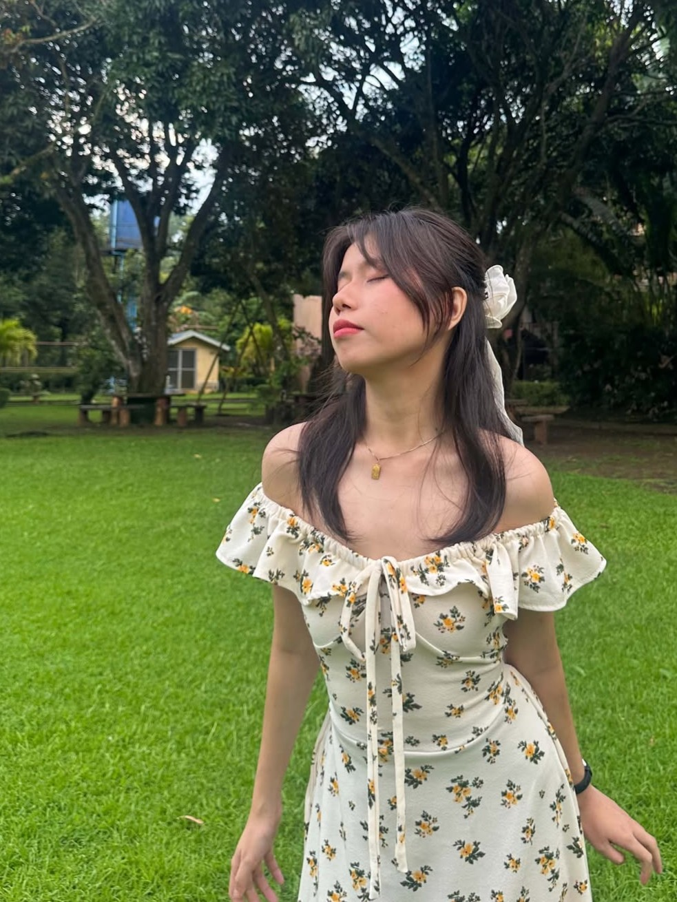

GEARTS+ · ARTS APPRECIATION
KAYECEEH
Art Portfolio
A collection of classwork, experiments, and moments from my creative journey.
In partial fulfillment of the requirements for Arts Appreciation
A LITTLE ABOUT ME
Hello, I'm Keana!

NICE TO MEET YOU
I'm Keana Consebido.
I'm a 4th year Computer Science student and artist known online as KayeCeeh. Art has been part of my life for as long as I can remember. This portfolio brings together the work I made for GEARTS+ and the ideas I chose to explore on my own.
I hope you enjoy looking through it as much as I enjoyed making it.
SELECTED WORKS
Art Gallery
Browse my classwork first, then explore the pieces I made beyond the assignments.
LOOKING BACK
My Reflection
Making this portfolio helped me see how much an artwork can change depending on the idea, materials, and choices behind it. The classwork gave me chances to practice and try approaches I might not have chosen on my own. My art explorations gave me room to follow a personal idea and see where it would take me.
Not every piece came together easily, but each one taught me something about patience, experimentation, and trusting my creative decisions. I learned to look at art as more than a finished image: it can hold a process, a feeling, or a story. I'm proud to share these works as a record of what I tried and what I learned.